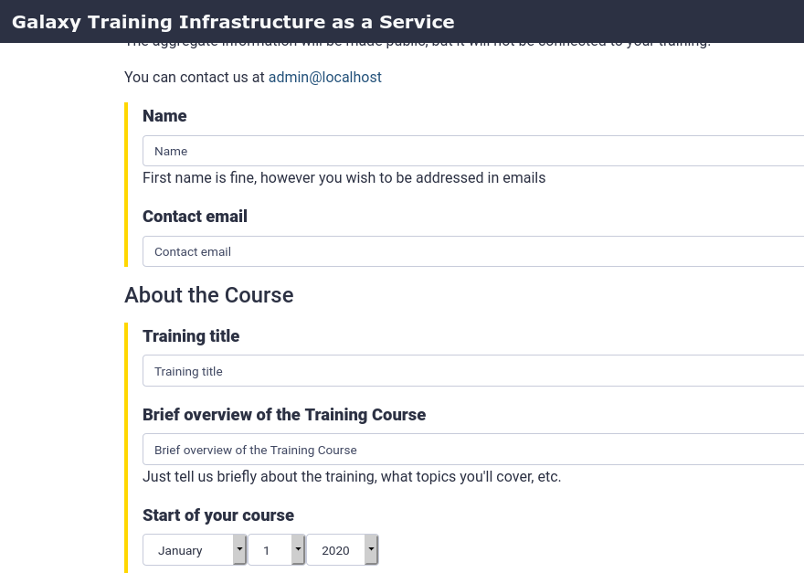
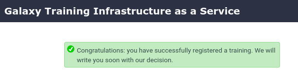
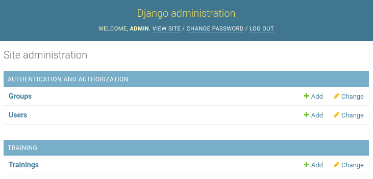
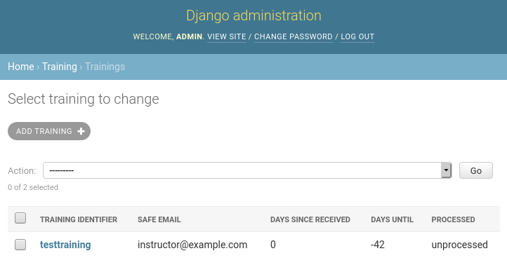
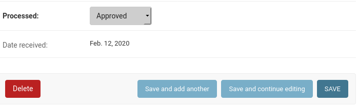
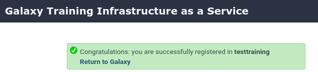
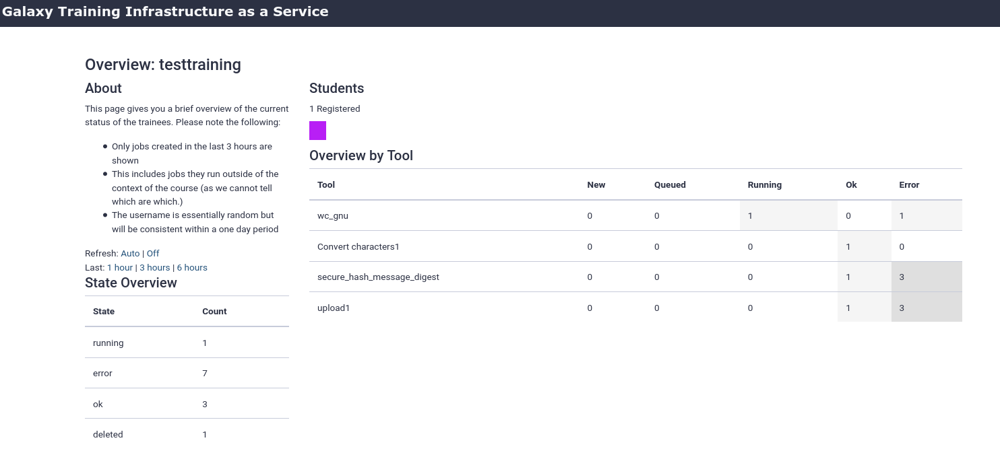
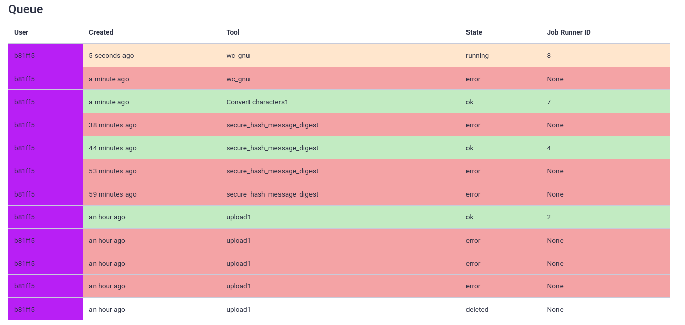

Training Infrastructure as a Service (TIaaS)
 Helena Rasche
Helena Rasche Saskia Hiltemann
Saskia HiltemannOverview
question Questionsobjectives Objectives
How to deploy EU’s TIaaS
requirements Requirements
Setup TIaaS
Request and manage trainings
Join a training
- Galaxy Server administration
- Ansible: slides slides - tutorial hands-on
- Galaxy Installation with Ansible: slides slides - tutorial hands-on
- Connecting Galaxy to a compute cluster: slides slides - tutorial hands-on
- Running Jobs on Remote Resources with Pulsar: slides slides - tutorial hands-on
time Time estimation: 30 minutes
Supporting Materials
last_modification Last modification: Jan 6, 2021
Overview
Agenda
Introduction
Galaxy is widely used for teaching. In order to facilitate instructors, Galaxy Europe has developed Training Infrastructure as a Service (TIaaS). Workshop instructors can apply for TIaaS, and on the day of their workshop, their participants will be placed in a special group and use dedicated resources, thus reducing queue times on the day of the training.
This tutorial will go cover how to set up such a service on your own Galaxy server.
Setting up TIaaS
hands_on Hands-on: Setup TIaaS
In your
requirements.ymladd the TIaaS ansible role:- src: usegalaxy_eu.tiaas2 version: 0.0.1And run the install step:
ansible-galaxy install -p roles -r requirements.ymlIn your
galaxyserversgroup variables file, add the following:# TIaaS setup tiaas_dir: /opt/tiaas tiaas_user: tiaas tiaas_group: tiaas tiaas_version: master tiaas_admin_user: admin tiaas_admin_pass: changemeIn the
galaxyserversgroup variables file, we also need to set the database permissions correctly for TIaaS. It needs to be able to access some Galaxy tables, and we will carefully define only the ones we really need:+++ group_vars/galaxyservers.yml postgresql_objects_users: - name: galaxy password: null + - name: tiaas + password: null postgresql_objects_databases: - name: galaxy owner: galaxy +postgresql_objects_privileges: +- database: galaxy + roles: tiaas + objs: galaxy_user,galaxy_session,job + type: table + privs: SELECT +- database: galaxy + roles: tiaas + objs: user_group_association,galaxy_group,role,group_role_association + type: table + privs: SELECT,INSERT +- database: galaxy + roles: tiaas + objs: role_id_seq,galaxy_group_id_seq,group_role_association_id_seq,user_group_association_id_seq + type: sequence + privs: USAGE,SELECTWe need to add the
usegalaxy_eu.tiaas2role to the end of the playbook (galaxy.yml)Lastly we should add the routes for TIaaS to the NGINX template for Galaxy:
location /tiaas { uwsgi_pass 127.0.0.1:5000; uwsgi_param UWSGI_SCHEME $scheme; include uwsgi_params; } location /tiaas/static { alias /opt/tiaas/static; } location /join-training { uwsgi_pass 127.0.0.1:5000; uwsgi_param UWSGI_SCHEME $scheme; include uwsgi_params; }Run the playbook (
ansible-playbook galaxy.yml)
TIaaS should be available now! The following routes on your server are now configured (we will run through these in the next section)
| URL | Use | Who |
|---|---|---|
| https://<server>/tiaas/new/ | Request a new TIaaS training | Instructors |
| https://<server>/tiaas/admin/ | Approve and Manage requests | Admin |
| https://<server>/tiaas/stats/ | Overall TIaaS statistics (EU Stats) | Admins, Funding Agencies |
| https://<server>/tiaas/calendar/ | Calendar of trainings (EU Calendar) | Admins, Funding Agencies |
| https://<server>/join-training/<training-id> | Join an TIaaS training | Participants |
| https://<server>/join-training/<training-id>/status | Dashboard with job states of trainees. | Instructors |
Let’s see it in action!
hands_on Hands-on: Using TIaaS
- Create a new TIaaS request
- Go to https://<server>/tiaas/new/
- Here you will find the request form users will fill in to request TIaaS: 
- For “Training Identifier”, fill in
gryffindor(or remember this value if you enter something different)
- This is the
<training-id>used in the URLs listed above used for:
- Workshop participants to join the tiaas group
- Workshop instructors to monitor the progress of their participants.
- Fill in the rest of the form as you like
- Submit the form and you should see a confirmation dialog: 
- Approve TIaaS request
- Next, the request will have to be approved by an admin
- Go to https://<server>/tiaas/admin
- Log in using the values you configured
tiaas_admin_userandtiaas_admin_passin your group variables file
- Default values were
admin:changeme- You should now see the admin panel: 
- Click on Trainings, you should see the TIaaS request listed here: 
- Approve the request
- Click on the training
- Scroll down to the bottom
- Change “Processed” to
Approvedand Save - At this point, you would likely email the person who made the request to inform them of approval
- Join TIaaS Training
- Make sure you are logged in to Galaxy
- On the day of the workshop, participants will visit a following URL to join the TIaaS group
- https://<server>/join-training/gryffindor
- A confirmation dialog should appear if all went well: 
- Monitor TIaaS status
- This is very useful for instructors to monitor the job state of their participants
- Go to https://<server>/join-training/gryffindor/status
- In the Dasboard you should see that one user (you) has joined the training \
- Run some jobs to see the dashboard in action 
- Scroll down to get some more information on a per-user level (anonymized)
- Every user designated by their own identifier and colour, but no personal information 
comment Note: GDPR assistance
Since this setup tracks additional personal information (submitter name & email, users in the queue view), TIaaS includes some always-on features to assist with your GDPR compliance.
- Users in public status dashboard are only visible by an anonymized identifier and colour
- Email addressses in the TIaaS admin panel will be automatically expunged 60 days after a training event
Of course you need to review any GDPR compliance concerns with your group’s legal representative(s), this only attempts to ensure some protections exist for the users of the system.
Job Configuration
While observability for teachers or trainers is already a huge benefit, one of the primary benefits of TIaaS from UseGalaxy.eu is that your jobs get sent to dedicated compute resources, which won’t be used by anyone else, during the period of the training. We will send all of the training jobs to pulsar if you have completed that tutorial, or one of the slurm destinations from the job configuration training.
In order to achieve this, we first need some way to sort the jobs of the training users into these private queues, while letting the other jobs continue on. So let’s create a sorting hat to figure out where jobs belong.
hands_on Hands-on: Writing a dynamic job destination
Create and open
files/galaxy/dynamic_job_rules/hogwarts.pyfrom galaxy.jobs import JobDestination from galaxy.jobs.mapper import JobMappingException import os def sorting_hat(app, user): # Check that the user is not anonymous if not user: return app.job_config.get_destination('slurm') # Collect the user's roles user_roles = [role.name for role in user.all_roles() if not role.deleted] # If any of these are prefixed with 'training-' if any([role.startswith('training-') for role in user_roles]): # Then they are a training user, we will send their jobs to pulsar, # Or give them extra resources return app.job_config.get_destination('slurm-2c') # or pulsar, if available return app.job_config.get_destination('slurm')This destination will check that the
user_emailis in a training group (role starting withtraining-).As usual, we need to instruct Galaxy of where to find this file:
Edit your group variables file and add the following:
galaxy_dynamic_job_rules: - my_rules.py + - hogwarts.pyWe next need to configure this plugin in our job configuration (
files/galaxy/config/job_conf.xml):<destination id="sorting_hat" runner="dynamic"> <param id="type">python</param> <param id="function">sorting_hat</param> </destination>This is a Python function dynamic destination. Galaxy will load all python files in the
{{ galaxy_dynamic_rule_dir }}, and all functions defined in those will be available to be used in thejob_conf.xmlAgain In
job_conf.xml, update the top level<destinations>definition and point it to the sorting hat:<destinations default="sorting_hat"> ... </destinations>Finally, upload jobs must stay local, the input files are a bit special, so we just send those to the local slurm cluster:
<tools> ... <tool id="upload1" destination="slurm"/> </tools>Run the playbook
Ensure your user is joined to a training
Run a job and observe the logs to see where it goes (
journalctl -u galaxy -f)
Congratulations! you have now set up TIaaS on your Galaxy server.
keypoints Key points
TIaaS is an additional service you can deploy which can help you provide a better service to your users
Feedback
Did you use this material as an instructor? Feel free to give us feedback on how it went.

Citing this Tutorial
- Helena Rasche, Saskia Hiltemann, 2021 Training Infrastructure as a Service (TIaaS) (Galaxy Training Materials). /training-material/topics/admin/tutorials/tiaas/tutorial.html Online; accessed TODAY
- Batut et al., 2018 Community-Driven Data Analysis Training for Biology Cell Systems 10.1016/j.cels.2018.05.012
details BibTeX
@misc{admin-tiaas, author = "Helena Rasche and Saskia Hiltemann", title = "Training Infrastructure as a Service (TIaaS) (Galaxy Training Materials)", year = "2021", month = "01", day = "06" url = "\url{/training-material/topics/admin/tutorials/tiaas/tutorial.html}", note = "[Online; accessed TODAY]" } @article{Batut_2018, doi = {10.1016/j.cels.2018.05.012}, url = {https://doi.org/10.1016%2Fj.cels.2018.05.012}, year = 2018, month = {jun}, publisher = {Elsevier {BV}}, volume = {6}, number = {6}, pages = {752--758.e1}, author = {B{\'{e}}r{\'{e}}nice Batut and Saskia Hiltemann and Andrea Bagnacani and Dannon Baker and Vivek Bhardwaj and Clemens Blank and Anthony Bretaudeau and Loraine Brillet-Gu{\'{e}}guen and Martin {\v{C}}ech and John Chilton and Dave Clements and Olivia Doppelt-Azeroual and Anika Erxleben and Mallory Ann Freeberg and Simon Gladman and Youri Hoogstrate and Hans-Rudolf Hotz and Torsten Houwaart and Pratik Jagtap and Delphine Larivi{\`{e}}re and Gildas Le Corguill{\'{e}} and Thomas Manke and Fabien Mareuil and Fidel Ram{\'{\i}}rez and Devon Ryan and Florian Christoph Sigloch and Nicola Soranzo and Joachim Wolff and Pavankumar Videm and Markus Wolfien and Aisanjiang Wubuli and Dilmurat Yusuf and James Taylor and Rolf Backofen and Anton Nekrutenko and Björn Grüning}, title = {Community-Driven Data Analysis Training for Biology}, journal = {Cell Systems} }